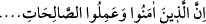

koruması ve onu dosdoğru din üzerinde sâbit kılmasıdır.
Nesâî’nin bir rivâyetinde şöyle buyrulur: “Kim, Kehf sûresinin on âyetini okursa,
Deccal’in fitnesinden korunur.”[243]
Ebû Saîd Hudrî’den rivâyete göre Rasûlullah (s.a.) şöyle buyurmuştur: “Kim nâzil
olduğu gibi Kehf sûresini okursa, kıyâmet gününde bu, onun için bulunduğu yerden
Mekke’ye kadar nûr olur. Kim de sondan on âyeti okursa, sonra da Deccal çıkarsa bu
kimseye musallat olamaz.”[244] Bu hadîsi Hâkim rivâyet etmiştir.
İbn Ömer (r.a.), Hz. Peygamber (s.a.)’in şöyle buyurduğunu rivâyet etmiştir: “Kim
cuma günü Kehf sûresini okursa, ayağının altından semânın derinliklerine kadar nur
yayılır. Bu nur kıyâmet gününde onu aydınlatır ve iki cuma arasındaki günahları
mağfiret olunur.”[245]
Ebû Saîd Hudrî (r.a.)’dan şu hadis rivâyet edilmiştir: “Kim cuma gecesinde Kehf
suresini okursa, onunla Beyt-i atîk arası nur dolar.”[246] Bu hadîsi Dârimî,
Müsned’inde Ebu Saîd’den mevkuf olarak rivâyet etmiştir. İmam Münzîrî’nin et-Terğîb
ve’t-terhîb’inde de mevcuttur.
Tibyân Tefsîri’nde Abdullah b. Ferve (r.a.)’dan rivâyete göre Rasûlullah (s.a.) şöyle
buyurmuştur: “Ben size nâzil olduğu zaman yetmiş bin meleğin eşlik ettiği, azameti
gök ve yer arası kadar olan, okuyan kimse için de bunun misli (ecir) verilen bir
sûreyi göstereyim mi?”
Ashâb: “Evet, Ya Rasûlallah!” dediler.
Rasûlullah (s.a.):
“Bu, Kehf sûresidir. Kim onu cuma günü okursa, diğer cumaya kadar ve üç gün de
ziyâdesi ile günahları mağfiret olunur. Ona semâya kadar ulaşan bir nûr verilir ve o
kimse deccal fitnesinden korunur.” buyurdu.[247]
Tefsîru’l-Haddâdî’de Übey b. Kâ‘b (r.a.)’dan rivâyet edildiğine göre Rasûlullah
(s.a.) şöyle buyurmuştur: “Kim Kehf sûresini okursa, sekiz güne kadar vuku bulacak
her fitneden korunmuş olur. Yatarken sonundaki âyeti okursa, bulunduğu yerden
Mekke’ye kadar bir nur peydâ olur. Bu nûrun içinde melekler, yatağından kalkıncaya
kadar onun için duâ ve istiğfar ederler. Eğer yatağı Mekke’de ise ve o sûreyi okursa
yatağı ile Beyt-i Ma’mûr arasında bir nur parlar. Bu nurun içinde melekler, o kimse
uyanıncaya kadar onun için dua ve istiğfar ederler.”[248]
Beyzâvî, Tefsîri’nde Hz. Peygamber (s.a.)’in şu hadîsi nakletmiştir: “Kim yatarken “” âyetini okursa, onun için yattığı yerden Mekke’ye kadar parlayan
bir nur olur. Bu nuru dolduran melekler, o kimse uyanıncaya kadar ona duâ ve
istiğfar ederler.”[249]
Fethu’l-karîb’de şöyle der:
“Kim uyumak istediğinde “ âyetini okur ve sonra:
“Allah’ım! Sana en sevgili vakitlerde beni uyandır. Sana en sevimli amellerde beni